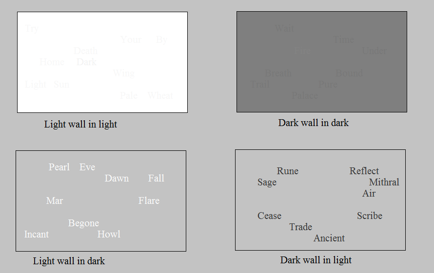
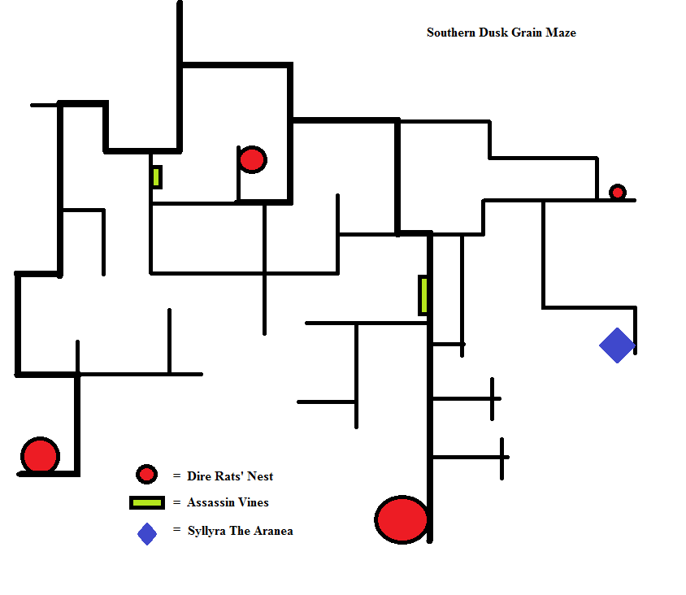
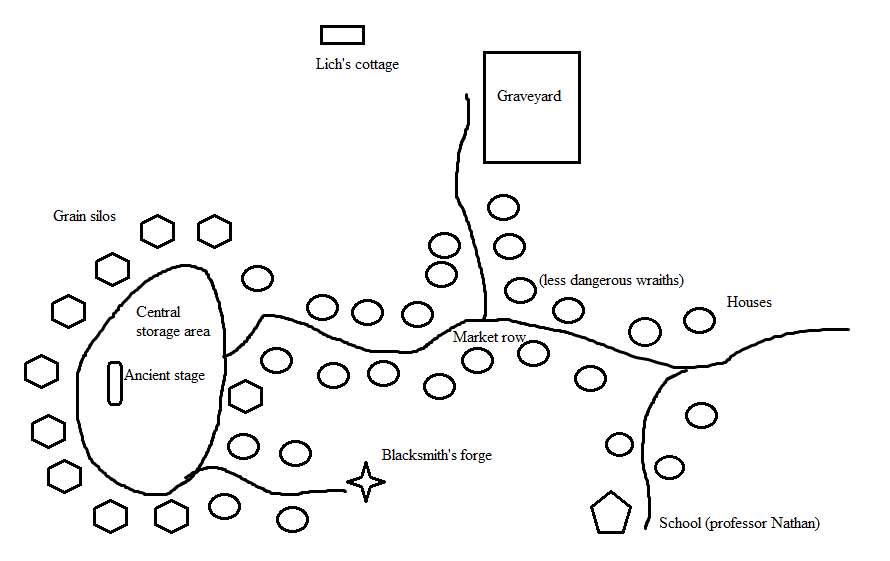

Overview
An unwatched plane has become a nuisance to homeowners in a newly developed district of Sigil. Formerly in the location of an abandoned warehouse, the gateway to the plane now stands inside a bed of teardrop begonias in the garden of a home. The key, carrying a wheat product over the threshold at dusk or dawn, was discovered accidentally by its new occupants. Briefly investigated by the authorities, and designated a "decaying plane," the occupants of the house were informed that, given an indeterminate amount of time, the portal would eventually blink out of existence. Not satisfied with this solution, the occupants of the house, a halfling house flipper couple, have asked adventurers privately to close the rift quickly and efficiently to increase property values.
Upon entering the portal, adventurers arrive in the plane of Grainne. Grainne is a plane in which there appears to be a low-hanging, static light source. Short geographical distances dramatically alter the time of day. In the geographical center of the plane there is a ruined castle. To the north are the "dawn" rune walls, to the south is the "dusk" wheat maze, to the west is "Sun's Tomb," the city of night, and to the east is the "Sun's Temple, a mountain. Depending on what time of day they arrive, they either find themselves roughly north of the castle in the "dawn" region, or in the southern "dusk" fields. [Alternatively, the plane may be presented as having normal day/night cycles, but rather traveling with the sunward movement arrests time and alters destination (meaning, embarking towards the setting sun ends in the "dusk" wheat maze, fleeing from the rising sun leads to the dawn walls, etc.)]
Secret/spoilers: The world didn't use to be this way. A powerful lich destroyed most sources of power in the plane long ago. It then chained itself to the very essence of the plane, draining it of its energy. The denizens of the plane, in one last heroic effort, shattered the lich's phylactery and attempted to hide the pieces, since they could not find the power to destroy them. The lich was bound in its castle, in a state of half existence, kept alive by its link to the power of the plane. The result of this was twofold. First, the western side of Grainne the town where the lich lived when it was alive, now Sun's Tomb, fell into a perpetual night that is gradually spreading. Second, the grain that sustained the land became linked to the half existence the lich was in, becoming no longer a substance that could sustain life. The denizens of the plane thus perished.
Locations
The Ruined Castle:
As adventurers near the center of the plane, the time of day becomes indeterminate, a gray fog obscuring the sky, sapping the color from the atmosphere, bringing with it a heaviness that makes their skin feel taut. The tall grass gives way to worn, cracked earth. Before them lies a castle in ruins, three of its four spires completely collapsed, the last standing barely the height of two men. The chamber walls, of varying, but generally low heights, do little to block the perpetual, uncomfortable wind.
Little more than skin stretched over bone, in the center of the ruined castle sits king Vaeter, slumped on his worn stone throne. His breathing sounds stark against the colorless winds that sough over the castle. He rasps at adventurers as they near. Beckoning them closer, king Vaeter explains that he made the ultimate sacrifice for his plane. He has been imprisoned in undeath, here, by a cursed force draining what is left of Grainne's planar energy. Centuries ago, a Hezrou demon of unknown origin began draining the land's power. The king, becoming the vessel through which the demon worked, was bound to undeath by a spell sustained by four foci. The denizens of the plane, peaceful, soft folk, fled long ago and only the king remains. Only by bringing to him the four foci, fragments of a broken mithral orb, will the spell be broken and he be able to rest. The plane will dematerialize, and he will find peace. He explains he does not know much about the force that imprisons him, only that it is exceedingly clever, having hidden fragments in regions touched by light as well as dark, so that no single creature that walks in one world would be able to retrieve all the fragments.
Characters with a strong knowledge religion skill may recognize the king as a weakened lich. They will also know that defeating the lich is only temporary, what they are sent to retrieve is probably is pieces of its phylactery. They may choose to fight or attempt to destroy the pieces as they find them, thereby avoiding the final battle. Characters with a strong knowledge planar will notice a flaw in the king's story. Demons are too chaotic to methodically drain an entire plane while carefully hiding fragments. This may provide a bonus to a sense motive check.
Dawn (North):
To the north in the dawn region lies two north-south running rune walls facing away from each other. Between the two lies a continual flame emanating from an indeterminate object that is hard to look at owing both to the light as well as a weakened repulsion enchantment. A DC 26 spellcraft check will pierce the magic and reveal that this is in fact a fragment. Otherwise, adventurers may attempt to decipher a powerless set of words on the walls. Casting the sun-side rune wall in shadow, and the shadow-side rune wall in light will reveal the true set of words on each wall. If touched in order (determined by a DC 15 spellcraft or knowledge arcana check, or by bringing the orb close to each word to see if it glows), will dispel the continual flame, revealing the fragment.
"Dawn Flare Begone, Cease Ancient Sage"
Dusk (south):
The dusk maze is a series of thicker or thinner passageways within the field of grain. Populated by dire rats, assassin vines and a single aranea, adventurers may shove their way through the grain but may only find themselves lost. The aranea, Syllyra, has been guarding her fragment for centuries. Her memory fuzzy, she may be willing to bargain with adventurers in exchange for a few dire rat bodies.
Sun's Temple:
Sun's Temple is located to the east. The golden fields of grain give way abruptly to the cliffs of a 50 foot rocky plateau, atop which is a 30 foot radius lake. In the center of that lake lies Sun's Temple, 15 foot wide raised area of land girded by a ring of standing stones. In its center is an open stone casket, housing a fragment, glittering darkly, cracked and sparkling, exposed to the sunlight. Watching over the decay of this fragment are two lantern archons. An inscription in Celestial surrounding the casket reads "death be to dark, lies here a thousand years, alight the spark"
Sun's Tomb:
Sun's tomb, formerly a quiet town, is now a shadowy ruin of vengeful wraiths. These wraiths, dead citizens left in states of unrest, circle around what used to be a small cottage where research of dark magics once took place. With barely any humanity left in them, they rage against anything disturbing the shadows. The rest of the town, abandoned and decayed, are populated by weaker shadows, that shy away from light.
At the school lurks the shadow of professor Nathan. If reminded of his humanity, he explains that he was part of a coalition that attempted to destroy the lich's phylactery. He tells briefly the story of the town, and how a man named Vaetar once lived by the graveyard. After a dark ritual where he killed many of the town's inhabitants, he moved towards the castle in the center of the plane.
In the central storage area lies a cluster of ruined grain silos. The ancient stage, once a center for performance, is long destroyed. The performance enhancing magic, however, has not completely decayed. Pieces of the stone underneath can be used to craft performance enhancing rings or necklaces. Beyond in a side street lies a blacksmith's forge, the blacksmith's final gift a selection of weapons that can kill incorporeal creatures.
The Lich's cottage contains books, an old exploded cauldron, and books that are beyond decayed.
Traveling:
Grainne, once populated by sun, and grain, has transformed in the absence of its king. 7 foot tall stalks of grain grow prolifically in the sunny regions, but suffer in the dark regions. As travelers move westwards, beyond the borders of dawn and dusk, the grain dies, and takes on a dry, dead quality. Should adventurers try to eat the grain, they will gain no nourishment, though they may feel that they have eaten something. There is something strangely static about the grain, the way it sways and overwhelms the landscape.
The four paths from the castle seem to offer little deviation, a sense of wrongness and slight disorientation hitting adventurers that stray into the sea of grain. Following the path of broken stalks is possible, but the plants, even in their dead state, seem to regenerate within an hour. A rune stone, however, lies about half an hour's travel to the southwest. Strewn with bones, and permanent stains of dried blood, the rune stone is about 10 feet wide. The site of an ancient ritual, should adventurers disturb the stone, either by shifting the bones, or murmuring the arcane words, undead magic scavengers will appear, drawn by the disturbance of an old power. The runes, requiring a DC 25 decipher check, gives only the finishing touches of a spell, stating that "the circle is complete and sealed with blood." A DC 25 spellcraft check will reveal that this is necromancy, and a DC 30 spellcraft check will detail that this is the site of a powerful lich finishing its transformation.